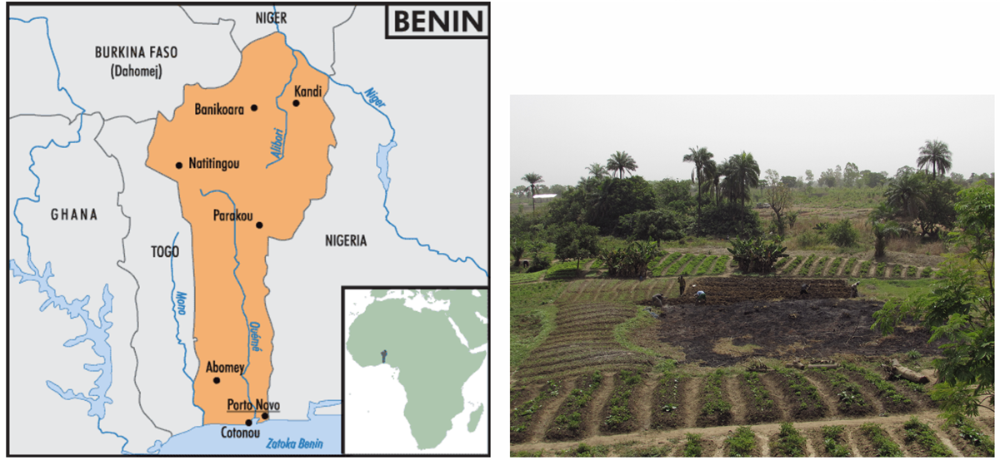
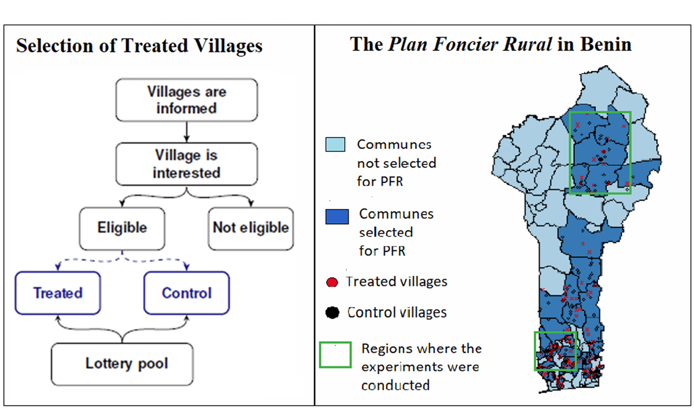
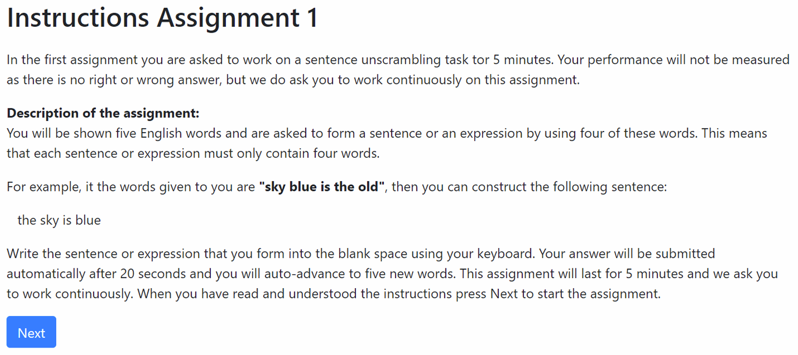
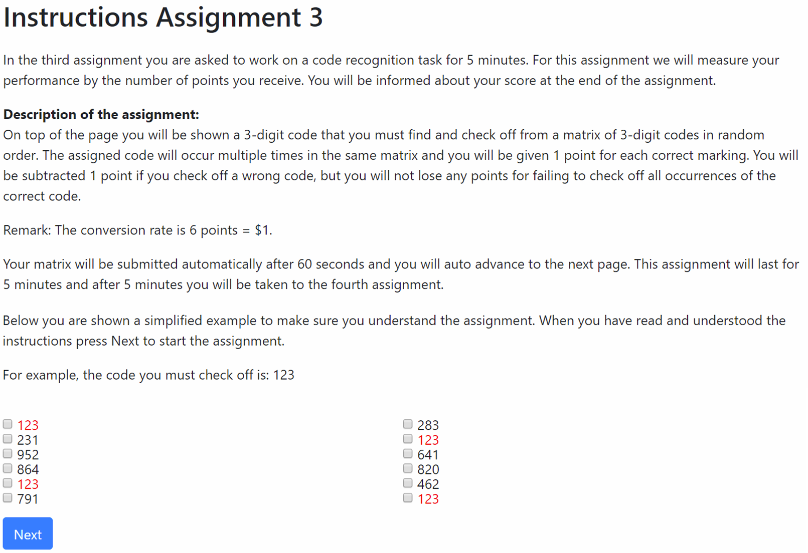
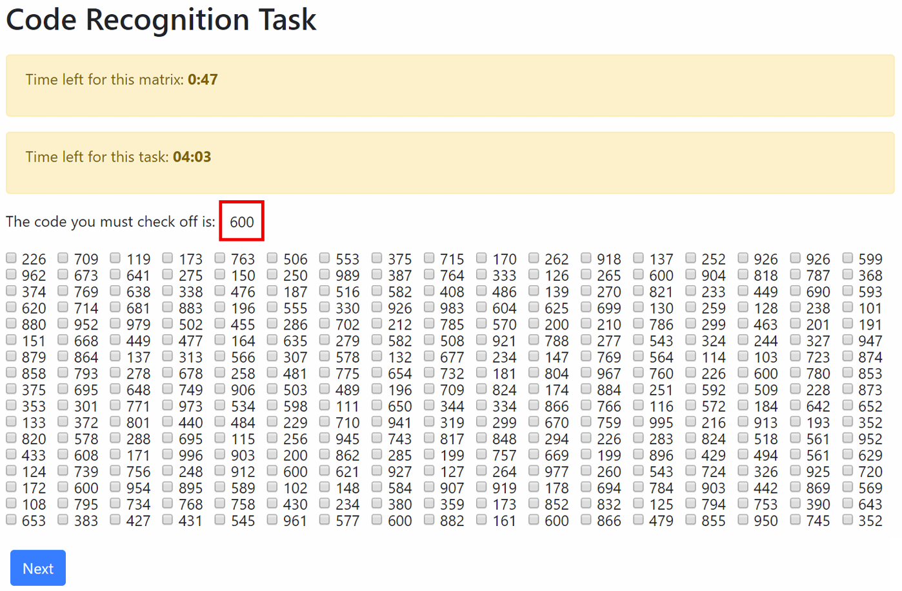
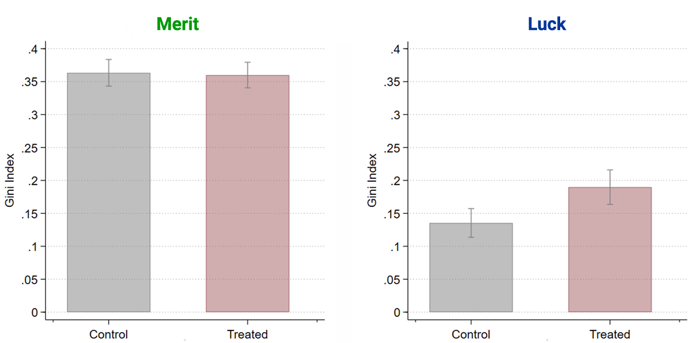
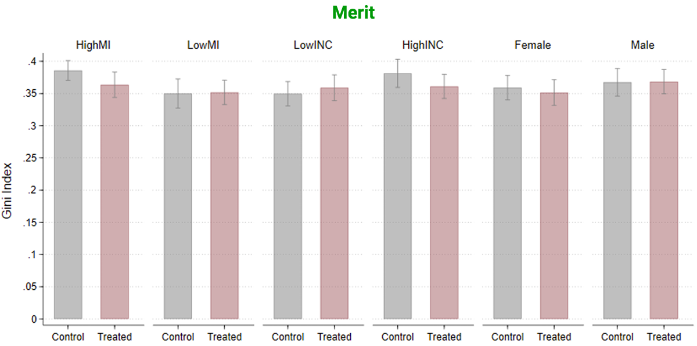
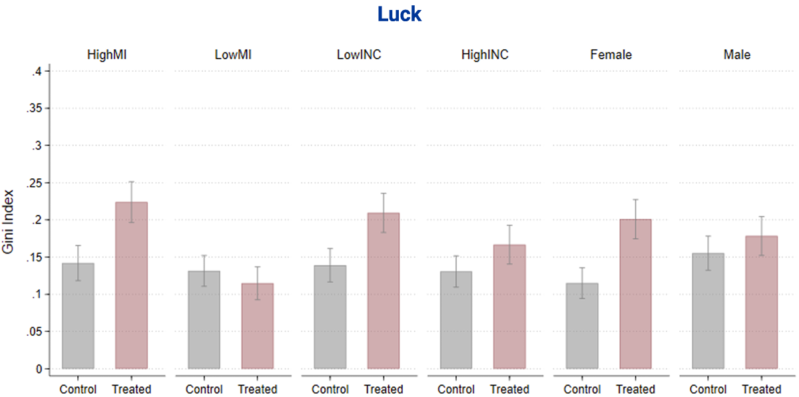

#7
novembre 2024
Preferenze endogene
“I mercati e altre istituzioni economiche non si limitano a distribuire beni e servizi: influenzano anche l’evoluzione di valori, gusti e personalità” (Bowles 1998).
Per leggere l’articolo, clicca QUI.
Cultura e istituzioni
“La cultura e le istituzioni sono variabili endogene che possono essere determinate dalla geografia, dalla tecnologia, dalle epidemie, dalle guerre e da altri eventi storici. Come interagiscono cultura e istituzioni? È possibile stabilire un nesso causale tra le due cose?” (Alesina e Giuliano 2015).
Per leggere l’articolo, clicca QUI.
Fabbri e Bigoni (2022) hanno studiato come il cambiamento dei diritti di proprietà influenza le preferenze distributive delle persone.
L’analisi combina:
Per leggere l’articolo, clicca QUI.

Il PFR beninese è il primo caso di riforma della proprietà terriera implementato come trial randomizzato controllato su larga scala.
Il processo di implementazione si è svolto nel biennio 2010-2011.
In primo luogo, sono stati identificati 576 villaggi idonei a implementare la riforma (i criteri per l’idoneità hanno riguardato, ad esempio, la dimensione della popolazione e l’ubicazione in aree rurali).
Successivamente, un sottocampione di 291 villaggi è stato selezionato tramite sorteggio casuale. La PFR è stata implementata in quei villaggi (gruppo di trattamento).
I villaggi non selezionati (gruppo di controllo) non hanno ricevuto alcun intervento. Ad oggi continuano ad avere diritti fondiari consuetudinari.

Tra dicembre 2019 e marzo 2020, 576 individui (detti “lavoratori”) sono stati reclutati online usando Amazon Mechanical Turk per svolgere quattro esercizi (real effort tasks).
L’esperimento ricalca quello ideato da Almas, Cappelen, e Tungodden (2020).
Le prossime slide mostrano due dei quattro esercizi.



Ciascun lavoratore ha ricevuto un pagamento fisso di 1$ (pari a 600 CFA, la valuta del Benin) per la partecipazione all’esperimento, più un pagamento variabile per ciascuno dei quattro esercizi.
Come è stato determinato il pagamento variabile?
In due esercizi su quattro, il pagamento variabile è stato determinato sulla base della fortuna. Negli altri due è stato determinato sulla base del merito.
Fortuna: una lotteria seleziona casualmente uno dei due lavoratori, che riceve 1$. L’altro lavoratore non riceve nulla.
Merito: il lavoratore della coppia che ha realizzato la prestazione migliore nell’esercizio riceve 1$. L’altro lavoratore non riceve nulla.
I lavoratori sono stati informati che l’ammontare variabile del pagamento determinato in via provvisoria sarebbe potuto essere redistribuito tra i due membri della coppia da un terzo individuo (lo spettatore).
La scelta dello spettatore, la cui identità è rimasta anonima e il cui meccanismo di reclutamento non è stato comunicato ai lavoratori, ha determinato il pagamento variabile finale dei due lavoratori.
Gli spettatori stati reclutati durante sessioni di lavoro sul campo tra la popolazione locale di 32 villaggi rurali del Benin.
I villaggi sono stati selezionati casualmente da un elenco incluso nel PFR per le regioni di Couffo e Mono, nel sud del paese, e Alibori e Borgou, nel nord (vedere mappa nelle slide precedenti).
Il giorno precedente l’esperimento, unx assistente di ricerca ha visitato il villaggio e ha chiesto alla popolazione locale di partecipare allo studio.
Tra le persone che il giorno dell’esperimento si sono presentate volontariamente all’orario concordato, ne sono state reclutate casualmente 18 per villaggio (9 uomini e 9 donne, maggiorenni e con un massimo di unx partecipante per nucleo familiare).
Numero totale degli spettatori: 576
Ai partecipanti non selezionati è stato pagato un gettone di presenza pari a 500 CFA (circa 0,85$) ed è stato chiesto di andarsene.
Gli spettatori hanno ricevuto un compenso fisso di 500 CFA per la loro partecipazione allo studio, più un compenso variabile determinato sulla base di altri task non legati a questo progetto.
Le sessioni sperimentali sono durate in media tre ore, con un guadagno medio complessivo di 2600 CFA (circa 4,8$).
La condizione Fortuna (rispettivamente, Merito) è pensata per valutare l’accettazione della diseguaglianza dello spettatore quando la sperequazione del reddito è determinata da mera fortuna (rispettivamente, dal merito).
Metà degli spettatori ha preso prima una decisione distributiva relativa alla condizione Fortuna e successivamente una decisione relativa alla condizione Merito. L’altra metà dei partecipanti ha preso le decisioni in ordine inverso.
\[ e = \frac{\left| \text{Reddito lavoratore}\ A - \text{Reddito lavoratore}\ B \right| }{\text{Reddito totale}} \in \left[ 0, 1 \right] \]
\[ e = \frac{\left| \text{Reddito lavoratore}\ A - \text{Reddito lavoratore}\ B \right| }{\text{Reddito totale}} \in \left[ 0, 1 \right] \]
Un coefficiente di Gini pari a 1 implica che lo spettatore non ha effettuato alcuna redistribuzione.
Un coefficiente di Gini pari a 0 implica che lo spettatore ha diviso i guadagni in modo perfettamente equo (300 CFA per ciascun lavoratore).
Maggiore è il valore del Gini, minore è l’avversione alla diseguaglianza.
Reminder: l’esperimento vuole valutare l’effetto della riforma del PFR sulle preferenze distributive.
Affinché la strategia sperimentale di Fabbri e Bigoni sia efficace, è necessario assicurarsi che non vi sia una frazione consistente di spettatori che dopo l’implementazione del PFR è migrata dai villaggi del gruppo di controllo a quelli del gruppo di trattamento (o viceversa).

Nel trattamento Merito, l’indice di Gini medio post-redistribuzione è simile tra i villaggi trattati e di controllo. Un t-test bilaterale conferma che questa differenza non è significativa (\(\text{p-value} = 0.755\)).
Nel trattamento Fortuna, la differenza nel livello di diseguaglianza post-redistribuzione scelto dagli spettatori diventa significativa (\(\text{p-value} = 0.027\)).


Il PFR ha indotto un aumento stimato di circa il 60% nell’accettazione della diseguaglianza generata dalla fortuna.
Le persone che hanno beneficiato maggioramente dell’introduzione di norme sul possesso della terra tendono a mostrare l’aumento più significativo di accettazione della diseguaglianza.
Domanda: perché l’assegnazione di diritti di proprietà aumenta la tolleranza delle persone verso la diseguaglianza generata dalla fortuna?
Domanda: perché l’assegnazione di diritti di proprietà aumenta la tolleranza delle persone verso la diseguaglianza generata dalla fortuna?
Qui entriamo nel campo della speculazione…
Possibile risposta #1: sperimentare la garanzia formale dei diritti di proprietà ha rafforzato la percezione degli spettatori che i lavoratori meritassero i loro pagamenti, anche se determinati puramente dalla fortuna.
Le istituzioni economiche svolgono un ruolo chiave nel determinare il grado di accettazione della diseguaglianza delle persone.
Riforme istituzionali orientate alla privatizzazione dell’accesso alle risorse economiche possono: